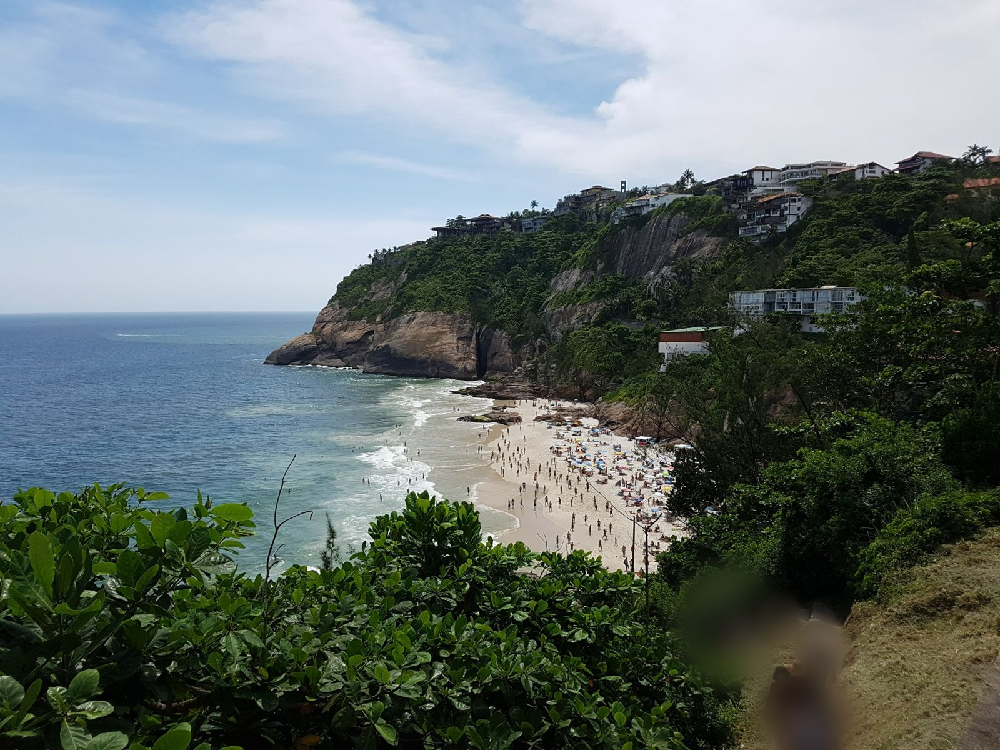
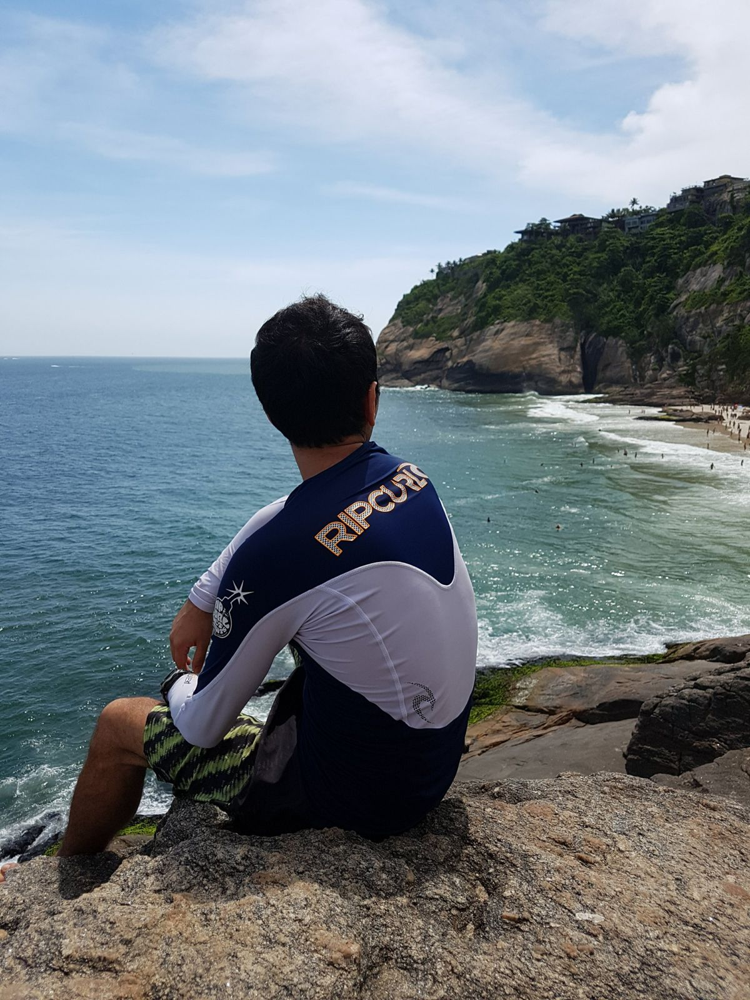
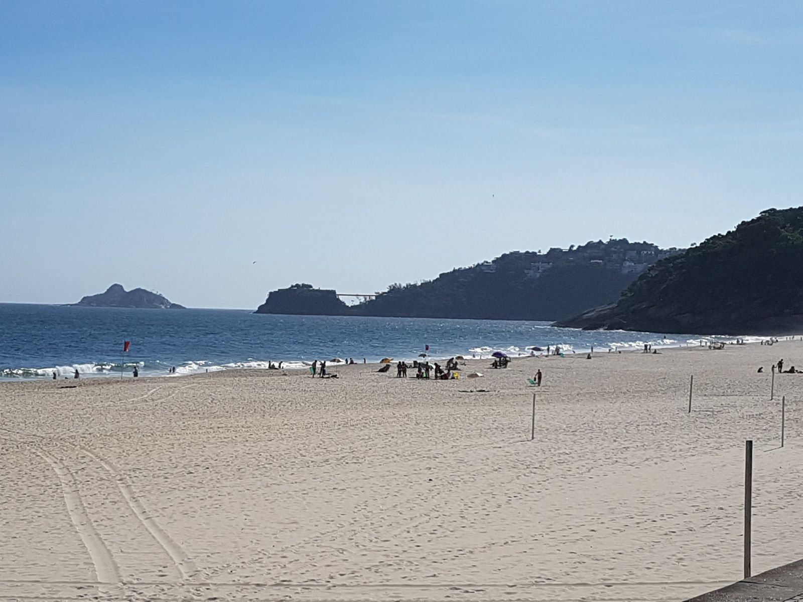
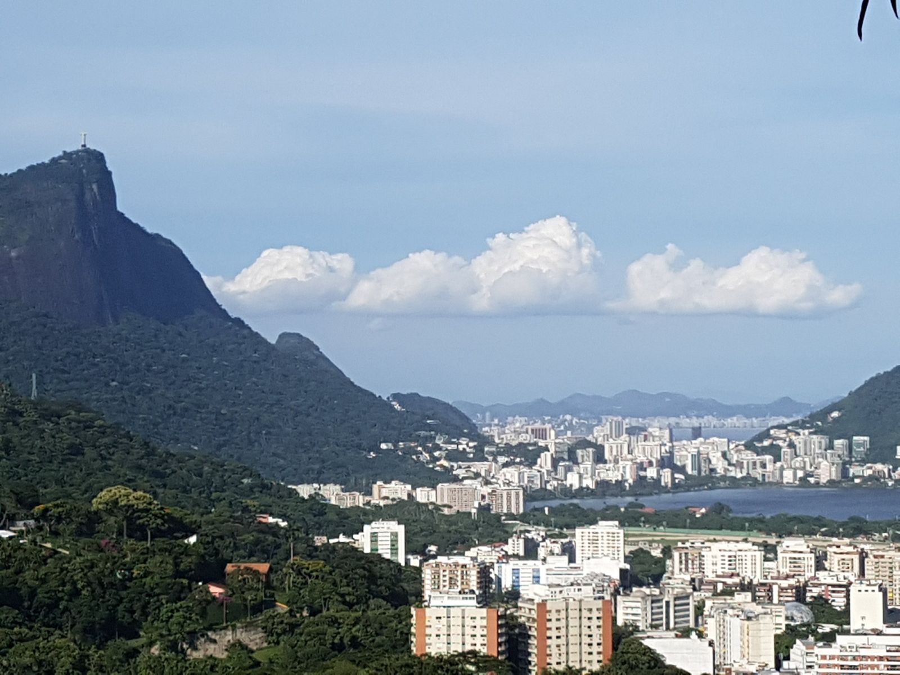
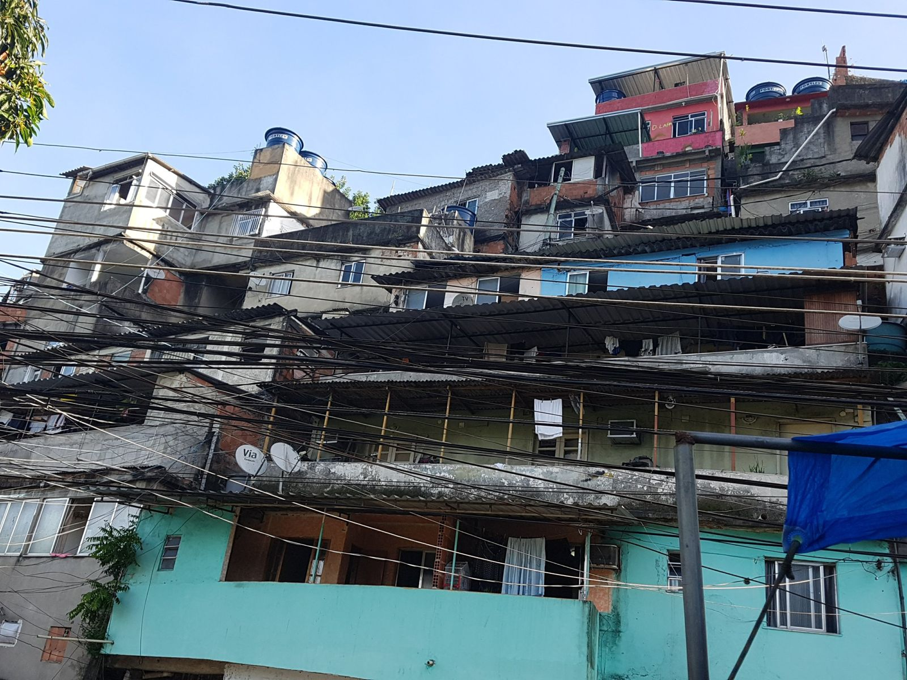
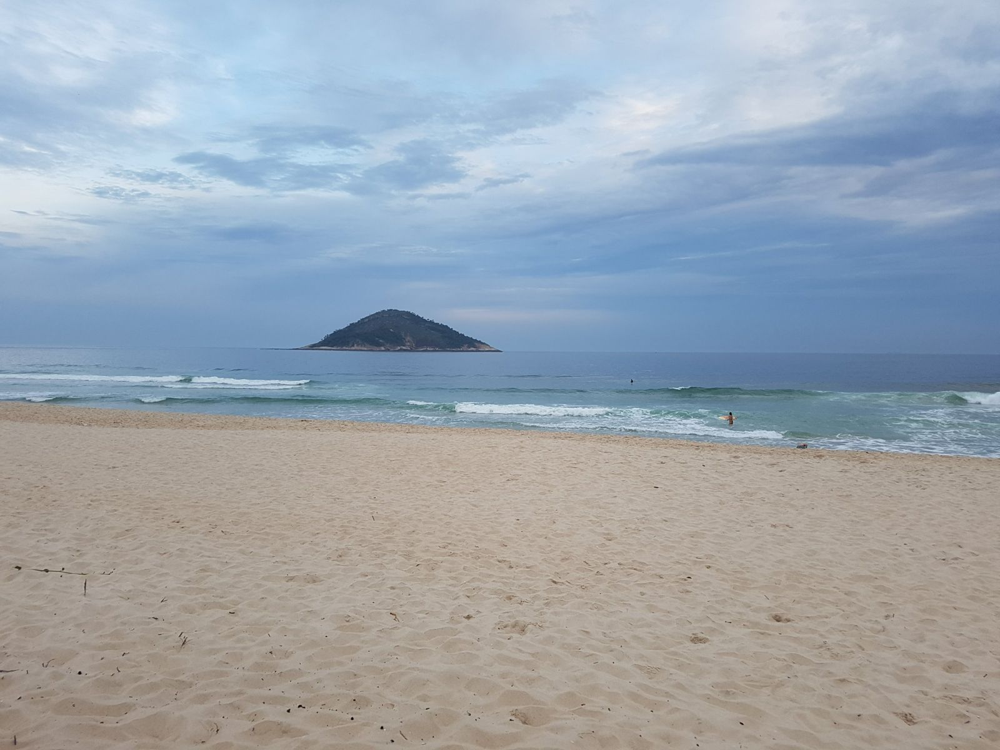
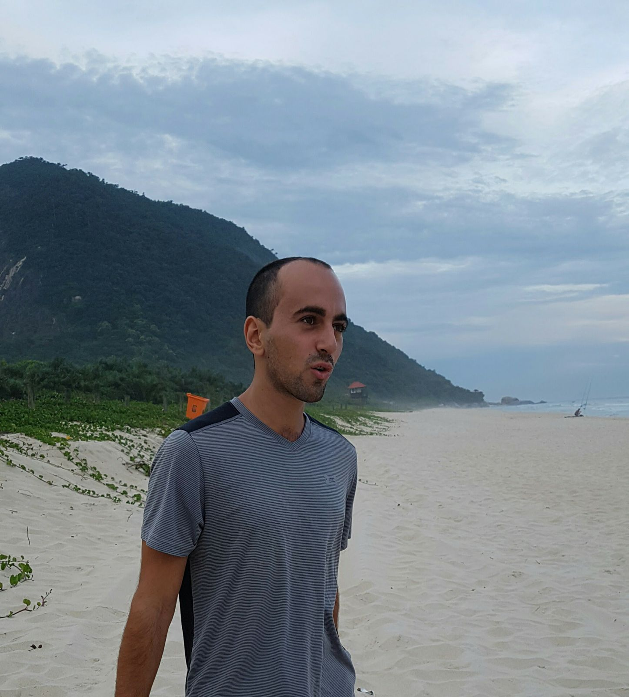
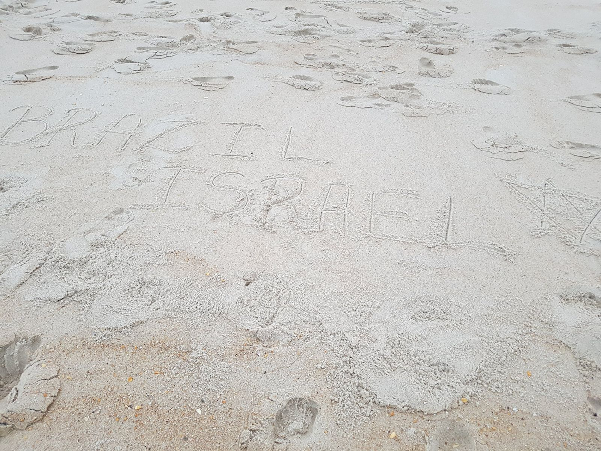
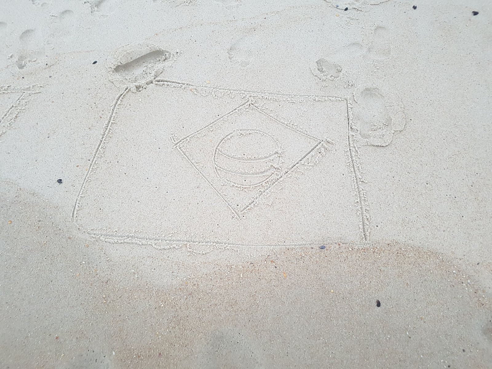

South America · Brazil · Rio de Janeiro
Rio de Janeiro, January 2018
This chapter starts after Jericoacoara. I flew to Rio de Janeiro through Fortaleza, slept in the cheapest hostel I found, and met a local in the hostel who took me to beaches I would not have reached alone. I have photos from four days, January 11, 12, 13 and 14, and one note from January 10.
My conclusion up front: Rio for me was not the postcard. It was the beaches on the west and south edge of the city, reached with a local, and one short walk in a favela. I do not have a single photo of Copacabana or of the Christ statue up close. What I have is Joatinga, São Conrado and Grumari, a view of the statue from far away, a night in a club in Ipanema, and what I remember of the walk in Rocinha, which I remembered under another name for years, as I explain below.
About the times: the file names of my photos show my phone's clock, and Google Photos shows its own local time (GMT-2, the summer time Rio had in January 2018). The two disagree. On January 11 Google Photos is three hours after the file name, which is what I expected, because my phone stayed on Colombian time for weeks. On January 12 and 14 the difference is only two hours, and the photos from the evening of January 12 show dusk light, which does not fit what Google Photos shows. So I give clock times only for January 11, where they fit the light, and for the other days I say only dusk or night. I do not know why the phone and Google disagree.
The days before this chapter are in the Brazil chapter on Fortaleza and Jericoacoara.
Jericoacoara to Rio
I flew from Jericoacoara to Rio through Fortaleza. I do not remember how I got from Jericoacoara to Fortaleza, the airline, the price or the date. My last photo from Jericoacoara is from January 5 and the next dated item is a note I wrote on January 10 about beaches, so the flight was somewhere between January 5 and January 10. I did not write it down.
What I found: a route page on flightconnections.com for the route from Rio de Janeiro Galeão to Fortaleza, with figures for October 2026, lists Gol and LATAM as the nonstop airlines, a flight time of about 3 hours 10 minutes and 43 flights a week (flightconnections.com).
What I did not find: fares I can quote, which airline I flew in 2018, and whether I flew to Galeão or to the city airport. I did not check the opposite direction, from Fortaleza to Rio.
The hostel
I slept in Blue Hostel Rio de Janeiro. I chose it because it was the cheapest I found. I do not remember the price, the neighbourhood, the number of nights or what the room was like. A booking website, ostrovok.ru, lists a "Blue Hostel" at Travessa Cristiano Lacorte 46 in Copacabana, with 4 rooms, a bar, a shared kitchen and free Wi-Fi, but the page does not say if it is open today, and I cannot tell if it is the same hostel I stayed in (ostrovok.ru). Check before you book anything.
The local who took me around
In the hostel I met a local who guided me. He took me to all the places in this chapter, and we went together each time. I do not name him and I do not show him in photos. On January 10 I saved a list of the beaches we meant to see: Joatinga, Barra, Recreio, Prainha and Grumari. I have photos only from Joatinga and Grumari, and from São Conrado, which was not on the list. I do not remember if we reached Barra, Recreio and Prainha and just did not take photos, and I do not remember how we travelled between the beaches.
January 11: Joatinga
Google Photos places the first pictures at Praia da Joatinga, from 15:07. Joatinga is a small beach under a cliff with large houses on top, and you reach it from above, by a path through the bushes. In the first photo, taken from that path, you can see the beach below with its umbrellas. People were walking on the path behind me, and I blurred them.


What I found: an article on Catraca Livre, first published on October 30, 2015 and last updated on May 22, 2024, says that bus 557 passes in front of the condominium, that by car you take Estrada do Joá and park near the Clube Costa Brava, and that a short trail with steep sections and some rocks leads to the sand. It adds that high tide covers the whole beach, that there is little or no phone signal at the beach, so you should arrange the taxi back in advance, and that entry is free (catracalivre.com.br).
What I did not find: how we came to Joatinga in 2018. I also did not check the tide on the day I was there.
January 11: São Conrado
At 16:56 I photographed a long beach with a few people and vehicle tracks in the sand, and Google Photos places it at Praia de São Conrado. At the right edge of the beach there is a green point with a bridge-like rock, and at the left an island. I took a second photo four minutes later, of the same stretch with three islands on the horizon.

January 11: Rocinha, or Cidade de Deus?
Here my memory and Google Photos disagree, and I tell both. I remember that the local took me to Cidade de Deus, the favela from the film "City of God". We went by bus, and I remember that before we went in, he crossed himself. We went on foot and stayed only a short time. I was very excited, because I had seen the film. I have one photo from there, the one below, of houses piled on top of each other with a mess of cables.
Google Photos places that photo at 17:48 in Rocinha, a different favela, on the hill by the Zuzu Angel tunnel, and not in Cidade de Deus. The photo I took four minutes earlier, at 17:44, is a view over the city with the Christ statue on its mountain and the lagoon, and Google Photos puts it in the same area. I trust the location that the phone recorded more than my memory after eight years, so I say here that the photo is from Rocinha. It is possible that I walked in more than one place that day and my memory mixed them, and I did not find a way to settle it.


What I found: an Associated Press report from February 9, 2026 says that Rio received 12.5 million tourists in 2025, including 2.1 million international visitors, and that more visitors now go to the favelas, Rocinha among them, with local guides who start with viewpoints and take them to galleries and performances (thestar.com.my).
What I did not find: a current safety source that I can date and trust, and I did not research Cidade de Deus at all. The AP report does not discuss crime. I went with a local, on foot, and stayed for a short time. I do not recommend going into a favela alone.
January 12: Grumari
The next day, Google Photos places the pictures at Praia do Grumari, a long beach at the western edge of the city with green mountains behind it and small islands in front of it. The photos from this day are from the grey, cloudy hours, with almost nobody on the sand.


On the sand there were drawings and writings. I photographed the word BRAZIL, the word ISRAEL, a Star of David and a Brazilian flag drawn in the sand. I do not remember who wrote them.


Later I filmed the beach and the island from the coast road, which runs on the slope above the sea, with the sound removed. I cut the first part of the video, where a stranger stands next to a car.
What I found: an article by Diário do Turismo, published on January 20, 2025, says that Grumari has no direct access by bus or other public transport. It recommends driving, or taking the BRT or a bus to Recreio dos Bandeirantes and a ride-share from there. It describes the beach as less developed than Copacabana and Ipanema, with controlled access and basic infrastructure, mostly kiosks with drinks and snacks (diariodoturismo.com.br).
What I did not find: a dated page on how to reach Prainha, bus numbers, and anything on safety after dark. I also do not know how we came to Grumari and back in 2018.
January 13
I have nothing from January 13 that I can show. I do not remember what I did that day.
January 14: a night in Ipanema
The next item is a 20-second video from the night between January 13 and 14. Google Photos places it in Ipanema, and it is the only item I have from a night out in Rio. It was filmed from a balcony above a dance floor, with a green LED sign on the wall, a chandelier, coloured lights and a crowd. I do not show it here: it is a dark crowd with loud music, and it says nothing about the place. I do not remember the name of the club, who I went with, the entrance price or what time it was. Google Photos says about 5 in the morning and the phone's file name says 3 in the morning, and I do not know which is right.
What I do not remember
I do not remember how I got from Jericoacoara to Fortaleza and then to Rio, the airline, the price or the date (between January 5 and 10). I do not remember the hostel's address, price or how many nights I slept there, and I cannot tell if the hostel I found online is the same one. I do not remember how the local and I travelled between the beaches, if we reached Barra, Recreio and Prainha, or how we came back each day. I do not remember who wrote the words in the sand at Grumari. For January 11 I am not sure if the favela was Rocinha or Cidade de Deus. I do not remember the name of the club, or what I did on January 13. I also did not see Copacabana, Ipanema beach in daylight or the Christ statue from close, and I did not take photos of them.